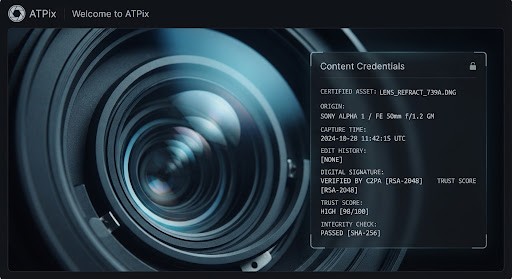

Your Data.
Sovereign Protocol.
AT Protocol reference implementation for user-owned photo galleries. Built with HappyView App View, C2PA 2.2 provenance, and experimental Permissioned Spaces (ATP-0016).
info Project Status — Early Reference Implementation
ATPix is not a polished consumer app. It is a developer-focused PoC demonstrating user-owned storage via PDS, C2PA tamper-evident provenance, and permissioned albums via HappyView Spaces (ATP-0016). Gallery population uses dual paths: direct PDS uploads + HappyView network discovery (no custom firehose).
PDS uploads • C2PA embedding • Public galleries • HappyView indexing
Permissioned Spaces (mandatory v1) • Full album curation • C2PA validation UI
Production Lexicons • Broader format support • Community testing
PDS-Backed Sovereignty
Photos live as signed records + blobs in your Personal Data Server. Portable. Verifiable. No vendor lock-in.
HappyView Discovery
Follow-graph + hashtag feed powered entirely by HappyView Jetstream + backfill. No custom firehose.
C2PA 2.2 Provenance
Every upload embeds a cryptographically signed manifest. Actions (created, edited, published) create a verifiable audit trail.
